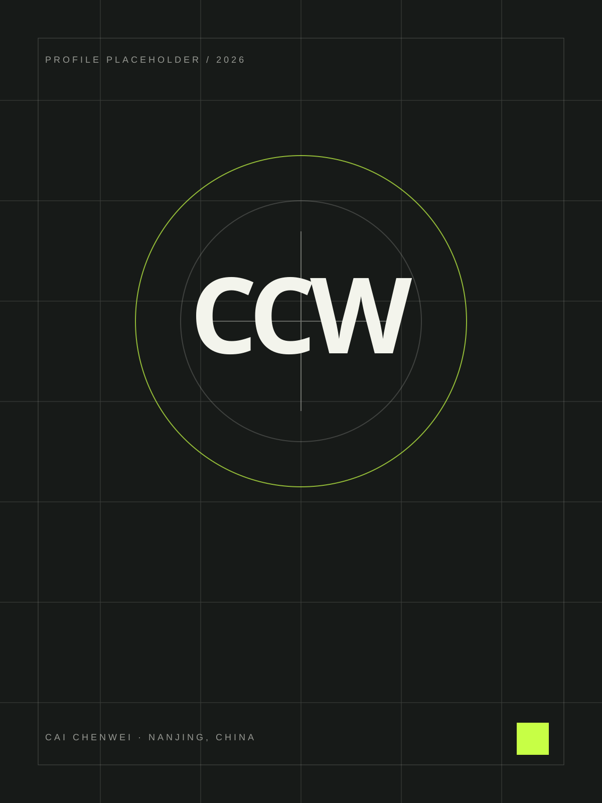

班长 / 金陵科技学院
统筹 30+ 人班级日常管理，承担师生对接、数据统计与通知传达，累计处理事务 100+ 项；综合测评位列班级前 10。
金陵科技学院电子科学与技术专业本科生，现任班长。我关注 AI Agent 在学习与开发中的实际应用，熟练使用 Claude Code、Codex 与 OpenAI 工具链推进需求拆解、代码实现和迭代验证；以 C、C++、Python 为主要开发语言，正在学习 Java，并使用 LangChain 进行 AI 应用编排。

把问题想清楚，把细节做扎实，让每一次执行都有可靠的结果。
从班级管理到教育实践，再到技术探索，我在真实问题中持续训练自己的工作方法。
统筹 30+ 人班级日常管理，承担师生对接、数据统计与通知传达，累计处理事务 100+ 项；综合测评位列班级前 10。
负责 20+ 人课堂教务、学生考勤与秩序维护，独立批改作业和阶段测试 200+ 份，并以错题台账和学情报告持续跟进学习效果。
为 3 名中小学生定制一对一辅导方案，根据阶段测试动态调整训练重点，辅导后学生单科平均提升 10–15 分。
这些实践来自真实经历，关注学习成长、工作效率与技术能力如何形成可复用的方法。
通过错题台账、阶段测评与标准化学情报告，让学习问题和改进路径清晰可见。
LEARNING PROGRESS SYSTEM使用 AI 辅助整理教案、生成练习题与统计成绩，减少重复工作，把时间留给真正重要的沟通。
AI-ASSISTED WORKFLOW持续公开维护 3 个 GitHub 项目，从效率工具、数据聚合到视觉创作，在真实迭代中训练工程思维。
OPEN-SOURCE LAB
把想法写成可以运行、可以复查、也可以继续生长的公开作品。
隐私优先的剪贴板历史工具，以本地 SQLite 保存数据，通过 SSE 实时同步，并自动识别文本、图片、链接与代码。
面向全球音乐榜单的自动化聚合器，每月追踪 8 大平台热门歌曲，形成跨平台综合排名与专业乐评。
为 Codex 制作的菲比啾比像素风桌面宠物，包含角色精灵图、方向对照与完整的视觉 QA 结果。
在班长与助教经历中持续协调同学、老师和家长，让信息准确传达，让多人协作有序发生。
从考勤、作业到阶段测评，用结构化记录发现问题，并把数据转化为清晰可执行的改进建议。
熟练使用 Claude Code、Codex 与 OpenAI 工具链，把需求拆解、代码实现、调试验证和文档整理串成可复用流程。
以 C、C++、Python 为主要开发语言，能够完成算法练习、脚本自动化与项目开发；正在学习 Java，并用 LangChain 探索 AI 应用编排。
金陵科技学院电子科学与技术专业本科生，现任班长。我关注 AI Agent 在学习与开发中的实际应用，熟练使用 Claude Code、Codex 与 OpenAI 工具链推进需求拆解、代码实现和迭代验证；以 C、C++、Python 为主要开发语言，正在学习 Java，并使用 LangChain 进行 AI 应用编排。